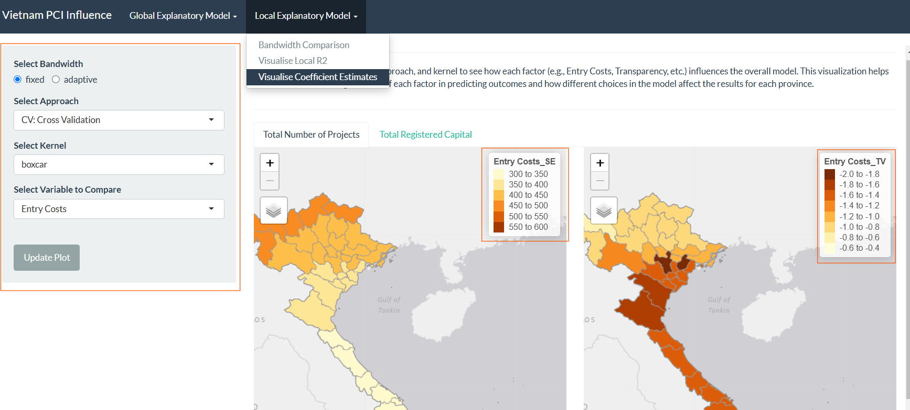

User Guide
PCI Spatial Pattern Analysis and Hotspots Analysis
This section displays the LISA map, which highlights local clusters and spatial outliers based on Local Moran’s I statistic.
Mapping Variable (Year): Select the PCI year to analyze.
Options are dynamically populated based on available data
- Y2012-Y2022
Contiguity Method: Choose the spatial contiguity method.
Options:
Queen(default) orRook.“Queen” considers all surrounding areas as neighbors, while “Rook” only considers those sharing borders. Selecting the appropriate method affects which areas are considered spatially related, impacting the detection of clusters or patterns.
Spatial Weights Style: Select a weighting style for spatial association.
Options:
W(Row standardized),B(Binary),C(Globally standardized),U(C / number of neighbors),minmax,S(Variance).This setting ensures that neighboring areas are weighted consistently, making the spatial correlation measures more meaningful and comparable across regions.
Number of Simulations: Set the number of simulations for significance testing (between 99 and 499).
- Users can adjust this based on the desired balance between accuracy and computational time.
Confidence Level: Select the confidence level for the LISA significance results.
Options: 95% (0.05) or 99% (0.01).
A higher confidence level (e.g., 99%) reduces the chance of false positives, ensuring the detected patterns are statistically reliable.
LISA Classification: Select a classification method for the LISA clusters.
Options:
mean,median,pysal.This affects the interpretation of clusters (e.g., high-high or low-low areas) and helps customize the analysis to specific policy or research needs.
Local Moran’s Statistic: Choose the type of Local Moran’s statistic to display.
- Options:
local moran(ii),expectation(eii),variance(var_ii),std deviation(z_ii),P-value
- Options:

The Main Panel displays the results based on the selected calibration inputs:
Local Moran of PCI: The LISA map shows spatial clusters of similar PCI levels and outliers, indicating local dependencies or deviations.
In this section, users can view the Gi* hotspot map, which identifies spatial clusters of high and low PCI values.
Mapping Variable (Year): Select the PCI year to analyze.
- Options: 2019, 2020, 2021, 2022.
Classification Method: Choose a method for classifying PCI values on the map.
Options:
cont,equal,pretty,quantile,kmeans,hclust,bclust,fisher,jenks.This dropdown lets users choose the classification method for dividing the data into classes or intervals.
Number of Classes: Set the number of classification levels (between 5 and 10) for the PCI values.
- A slider allows the user to set the number of data classes, which are the ranges into which the data is divided for color-coding on the map
Colour Scheme: Select a color scheme to visualize PCI hotspots and cold spots.
Options: Blues, Reds, Greens, Yellow-Orange-Red, Yellow-Orange-Brown, Yellow-Green, Orange-Red.
Users can choose a color scheme to represent different classes on the map.
Level of Transparency: Adjust the map’s opacity for better visual contrast (range: 0 to 1).
- This slider controls the transparency of the map layer, with a scale from 0 (fully transparent) to 1 (fully opaque).

The Main Panel displays the results based on the selected calibration inputs
The Gi* hotspot map highlights significant PCI hotspots (high PCI clusters) and cold spots (low PCI clusters) across provinces for the selected year.

FDI Spatial Pattern Analysis and Hotspots Analysis
This section displays the LISA map, which highlights local clusters and spatial outliers based on Local Moran’s I statistic.
Mapping Variable (Year): Select the FDI category to analyze.
Options are dynamically populated based on available data
T1: Total Projects
T2: Total Registered Capital
Contiguity Method: Choose the spatial contiguity method.
Options:
Queen(default) orRook.“Queen” considers all surrounding areas as neighbors, while “Rook” only considers those sharing borders. Selecting the appropriate method affects which areas are considered spatially related, impacting the detection of clusters or patterns.
Spatial Weights Style: Select a weighting style for spatial association.
Options:
W(Row standardized),B(Binary),C(Globally standardized),U(C / number of neighbors),minmax,S(Variance).This setting ensures that neighboring areas are weighted consistently, making the spatial correlation measures more meaningful and comparable across regions.
Number of Simulations: Set the number of simulations for significance testing (between 99 and 499).
- Users can adjust this based on the desired balance between accuracy and computational time.
Confidence Level: Select the confidence level for the LISA significance results.
Options: 95% (0.05) or 99% (0.01).
A higher confidence level (e.g., 99%) reduces the chance of false positives, ensuring the detected patterns are statistically reliable.
LISA Classification: Select a classification method for the LISA clusters.
Options:
mean,median,pysal.This affects the interpretation of clusters (e.g., high-high or low-low areas) and helps customize the analysis to specific policy or research needs.
Local Moran’s Statistic: Choose the type of Local Moran’s statistic to display.
- Options:
local moran(ii),expectation(eii),variance(var_ii),std deviation(z_ii),P-value
- Options:

Local Moran of FDI: The LISA map shows spatial clusters of similar total projects and total registered capitals levels and outliers, indicating local dependencies or deviations.
In this section, users can view the Gi* hotspot map, which identifies spatial clusters of high and low FDI values.
Mapping Variable (Year): Select the FDI category to analyze.
- Options: Total Projects and Total registered capital
Classification Method: Choose a method for classifying PCI values on the map.
Options:
cont,equal,pretty,quantile,kmeans,hclust,bclust,fisher,jenks.This dropdown lets users choose the classification method for dividing the data into classes or intervals.
Number of Classes: Set the number of classification levels (between 5 and 10) for the PCI values.
- A slider allows the user to set the number of data classes, which are the ranges into which the data is divided for color-coding on the map
Colour Scheme: Select a color scheme to visualize PCI hotspots and cold spots.
Options: Blues, Reds, Greens, Yellow-Orange-Red, Yellow-Orange-Brown, Yellow-Green, Orange-Red.
Users can choose a color scheme to represent different classes on the map.
Level of Transparency: Adjust the map’s opacity for better visual contrast (range: 0 to 1).
- This slider controls the transparency of the map layer, with a scale from 0 (fully transparent) to 1 (fully opaque).

The Main Panel displays the results based on the selected calibration inputs
The Gi* hotspot map highlights significant FDI category hotspots (high PCI clusters) and cold spots (low PCI clusters) across provinces for the selected year.
Global Explanatory Model
Step-by-Step Instructions
Select an FDI Measure:
- Use the tabs at the top to choose between Total Number of Projects or Total Registered Capital as the FDI measure you want to analyze.
Choose PCI Factors:
- In the left panel, you’ll find a list of available PCI factors (such as Entry Costs, Transparency, etc.). Select any combination of these factors to include in your customized model.
Update the Plot:
- Once you’ve made your PCI factor selections, click the Update Plot button to run the model with your chosen factors and refresh the results.
View the Results:
The results are displayed in two main sections:
Model Summary (Left Panel): This panel provides an overall summary of the model, including performance metrics like Adjusted R², to show how well the model explains the variation in FDI based on the selected factors.
Factor Contribution (Right Panel): This table displays detailed coefficient estimates for each selected factor, showing their individual contributions and significance within the model.
Tips for Interpretation
Adjusted R²: Look at this metric in the Model Summary panel to gauge how well your selected PCI factors explain variations in FDI.
Factor Contribution Table: Higher coefficients indicate a stronger impact of the factor on FDI. Positive values suggest a positive influence on FDI, while negative values suggest a negative influence.

Step-by-Step Instructions
Select an FDI Measure:
- Use the tabs at the top to choose between Total Number of Projects or Total Registered Capital as the FDI measure you want to analyze.
Choose a Stepwise Approach:
In the left panel, select one of the three stepwise methods:
Forward: Adds PCI factors one at a time based on their significance.
Backward: Removes less significant PCI factors step-by-step.
Both: Combines forward and backward selection to find the best balance of factors.
Additionally, select a Confidence Level for the chosen approach to set the threshold for including/excluding factors in the model.
Generate Results:
After selecting the approach and confidence level, click the Update Plot button to display the results.
The results include:
Summary Table (Right Panel): A breakdown of model metrics and selected factors.
Plot: A visual summary of how each approach affects the model’s performance.
Compare Stepwise Approaches Using the Radar Chart:
Bottom Left Panel: Here, you can compare how each approach performs by selecting Forward, Backward, and/or Both for comparison.
Set a Confidence Level for this comparison.
Click Update Radar Chart to generate the radar chart.
Interpret the Radar Chart:
- The radar chart (Right Panel) provides a side-by-side view of model performance across the selected stepwise approaches, helping you see which approach and confidence level best captures the relationship between PCI factors and FDI.
Tips for Interpretation
Summary Table: Higher R² values or lower AIC/BIC scores in the table indicate a better-fitting model for each stepwise method.
Radar Chart: A wider spread in the radar chart suggests better model performance. Compare across approaches to see which selection method aligns best with your confidence level.

Step-by-Step Instructions
Select an FDI Measure:
- Begin by selecting either Total Number of Projects or Total Registered Capital from the tabs at the top to choose the FDI metric you want to examine.
Choose a Stepwise Approach and Confidence Level:
In the left panel, select one of the following stepwise approaches to refine the model:
Forward: Adds factors based on significance.
Backward: Removes less significant factors step-by-step.
Both: Balances forward and backward selection.
Set a Confidence Level to control the threshold for including or excluding PCI factors in the model.
Generate the Plot:
Once you’ve selected your approach and confidence level, click Update Plot to view the results.
The results will display on the right panel, where each PCI factor’s influence is shown:
Longer Lines indicate greater variation for that factor.
Rightward Positions represent positive autocorrelation, suggesting that increases in this factor are positively correlated with the FDI metric.
Leftward Positions represent negative autocorrelation, showing a negative relationship with FDI.
Sort Results:
- To view factors in Ascending or Descending order by impact, use the sort feature in the left panel. This can help you prioritize which PCI factors have the most or least influence on FDI based on your analysis.
Local Explanatory Model
Step-by-Step Instructions
Select an FDI Measure:
- At the top, navigate to either Total Number of Projects or Total Registered Capital to select the FDI measure you want to investigate.
Choose Bandwidth Approaches and Kernels:
In the left panel, configure your Fixed and Adaptive bandwidth settings individually:
Bandwidth Approach: Select either Cross Validation or Akaike Information Criterion (AIC). Each approach evaluates bandwidth differently, so trying both can help identify which fits best with your data.
Kernel Type: For each bandwidth type, select a kernel function from the options:
Gaussian: Applies a normal distribution weight.
Exponential: Prioritizes nearby values, tapering with distance.
Bisquare: Gives weight within a defined radius, tapering sharply beyond it.
Tricube: Similar to Bisquare but with a smoother taper.
Boxcar: Applies equal weight within a set distance.
Generate the Comparison Plot:
Once you’ve selected your bandwidth approach and kernel for both Fixed and Adaptive bandwidth types, click Update Plot to generate the visualization.
The resulting comparison plot will display on the right panel, with each bandwidth type side by side, letting you easily compare their effects.
Step-by-Step Instructions
Select an FDI Measure:
- Begin by navigating to either Total Number of Projects or Total Registered Capital at the top to specify the FDI measure for analysis.
Customize Bandwidth, Approach, and Kernel Settings:
In the left panel, configure the Local R² model settings:
Bandwidth Type: Choose between Fixed and Adaptive to determine how bandwidth adjusts across the model:
Fixed applies the same bandwidth across all regions.
Adaptive adjusts bandwidth based on regional density.
Approach: Select from Cross Validation or Akaike Information Criterion (AIC) to optimize the model fit.
Kernel: Choose a kernel function to define how distances are weighted within the model:
Gaussian: Applies a normal distribution weight.
Exponential: Gives more weight to closer points, tapering with distance.
Bisquare: Applies weight within a set radius, dropping sharply beyond it.
Tricube: Similar to Bisquare but tapers more smoothly.
Boxcar: Assigns equal weight within a fixed distance.
Generate the Local R² Map:
Once you’ve selected the bandwidth, approach, and kernel, click Update Plot to generate the visualization.
The resulting map, displayed on the right, will show the Local R² values by province, allowing you to visually interpret where the model is performing well and where adjustments might be needed.
Step-by-Step Instructions
Select an FDI Measure:
- Begin by choosing Total Number of Projects or Total Registered Capital at the top to set the focus of the FDI analysis.
Configure Bandwidth, Approach, and Kernel Settings:
In the left panel, set up the model specifications:
Bandwidth Type: Choose between Fixed and Adaptive for the bandwidth:
Fixed maintains the same bandwidth across all regions.
Adaptive adjusts bandwidth according to regional density.
Approach: Pick either Cross Validation or Akaike Information Criterion (AIC) for model optimization.
Kernel: Select a kernel function to define distance weighting:
Gaussian: Applies weights using a normal distribution.
Exponential: Heavily weights closer points with a gradual tapering.
Bisquare: Weights points within a fixed radius, tapering sharply outside.
Tricube: Similar to Bisquare but with smoother tapering.
Boxcar: Assigns equal weight within a fixed distance.
Select Independent PCI Variables:
- Below the kernel setting, select the PCI factor (e.g., Entry Costs, Transparency) you wish to visualize. This choice will help focus on the specific impact of individual factors on the model.
Generate the Coefficient Estimates Visualization:
After configuring the settings, click Update Plot to create the visualization.
The results will appear on the right side as a map, showing a side-by-side comparison of the Standard Error (SE) and TV for each province. This enables you to interpret the effect size and significance of each PCI factor locally.
